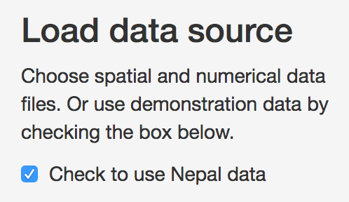
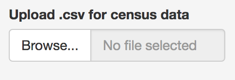
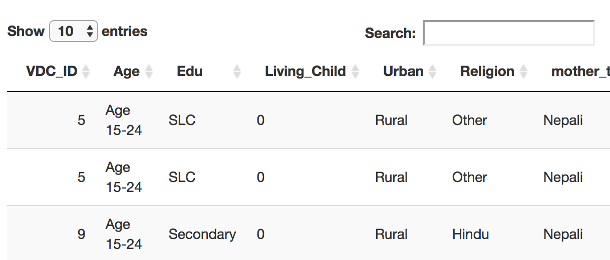

Chapter 11 Selecting Data
The Data selection tab allows users to either use sample DHS and survey datasets from Nepal, or to load the their own data. Currently the applica tion does not allow for formatting of data, so all numerical data must be in a harmonized prior to being entered into the application.

For a detailed description of the harmonization process, see ____.: At minimum,
- Item. Survey and census data must share exactly the same variable names
- Item. Variables that are common between survey and census must have the same definitions. For example, categorical variables must have the same number of classes, and these classes must be identical between the two sources
- Item. Variables must have roughly similar distributions between census and survey datasets.
Code used to conduct harmonization are included in the appendix.
Survey and census data each have their own tabs to assist with data loading. By default, data from Nepal will load, as the ‘Use Nepal data’ checkbox will be checked. To use other data, uncheck this box.

11.1 Survey tab
Survey data should include three different types of data: the indicator of interest, a column for the names of the survey regions used and additional columns for variables that will be used in the predictive model. If loading an external file, uncheck the ‘Use Nepal Data’ box and click on the ‘choose a .csv file’ box to select a file.

Survey Tab

Once you have selected a file, it should appear at the bottom of the page.

Next, select a shapefile representing the survey regions.

At present, only ESRI shapefiles are accepted. it is also important that when selecting the shapefile, all associated files are selected. Once a shapefile has been loaded it should appear at the top of the page.

Choosing all files for a shapefile
Once the shapefiles are loaded, a map will appear, unless there has been an error.

Map of survey areas
When the survey data have been loaded, you should select which variable will be the indicator to model, using the drop-down menu.

Indicator selection tab
Note that only binary variables are currently supported. Variables should be formatted as ‘0’ or ‘1’ only. Users should then select which variable represents the region or strata names in the data, as these will be used both in mapping and in creation of fixed or random effects. These region names should also be present and identically named in the census data to ensure accurate matching between the datasets.

Survey area names
11.2 Census
When selecting the census tab, default the map and table information will take some time to load as the datasets are larger.

The Census tab controls upload and structuring of census data
After the survey data are loaded, Census data should be loaded in a similar way. Note that the census data should include both the same survey stratum names as the survey data, as well as an additional spatial stratum representing the area at which predictions will be made.
Census spatial area selection
Users then can select the predictor variables that will be. Note that only predictors that appear in both survey and census data can be selected. To reduce confusion, it is best that the loaded data only include variables that will be relevant to the analysis. However, these variables can be removed later if they are not needed.

Select predictor variables